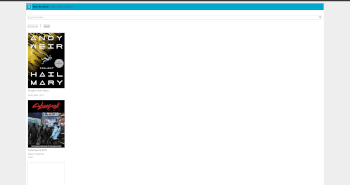
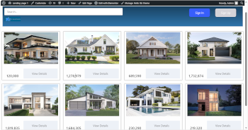
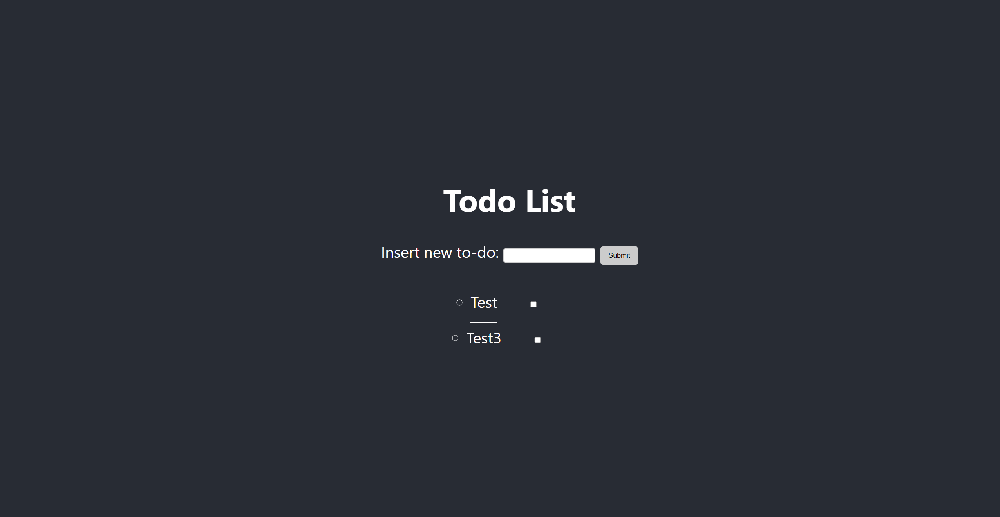
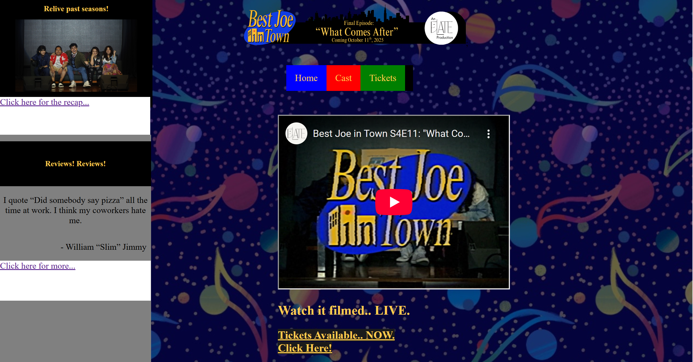
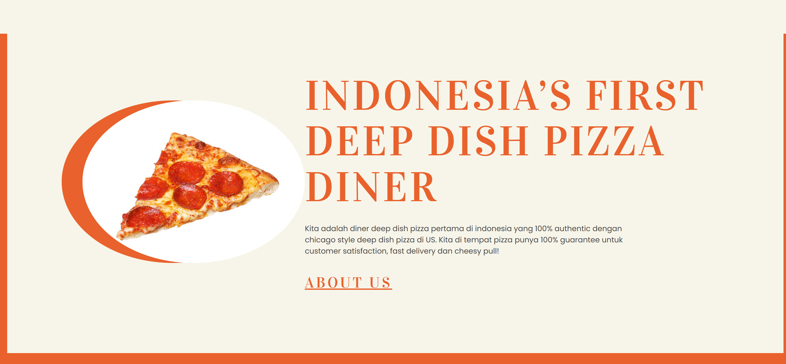

Hello! I'm a full-stack web developer with experience in Node.JS, Next.JS, HTML/CSS, JS, PHP, MongoDB, and Wordpress. I have worked on many personal projects that mainly has to do with me working with React or Next. I can also develop and design websites using Wordpress and Elementor, making sleek-looking, minimistic, and professional Wordpress websites for your business needs. I am most proud with my NextJS digital library project which taught me how to utilize MongoDB to fetch data and also display the dat using Typescript, I also learned how to use cookies to store data and also how to implement pagination for the digital library. All in all, below this is more information about me and also a preview of all the web development projects that I have done
A brief intoduction about myself

Technology/Tools: NextJS, Typescript, MongoDB
Description: This NextJS Digital Library is a web-app developed using NextJS, Typescript, and MongoDB. This web app’s function is to provide users with free books in the form of scanned PDFs. This web app currently features pagination, search features, and PDFs to read, and in the future, user-made contribution will be added as a feature.

Technology/Tools: Wordpress, Elementor
Description: This Wordpress website is a sample website which was made for me to practice using Wordpress and Elementor. This website is supposed to be a mock real estate catalog for houses. This website includes a custom HTML code to display a search box and pricing lists for the houses.
Technology/Tools: React,JS, Express
Description: RPS was a ReactJS web app I developed that uses cookies and ReactJS functionalities in order for users to be able to play rock, paper, scissors against a bot opponent. Features included in this web app are: win-streak counter and vs bot functionality.

Technology/Tools: React,JS, Express, MongoDB
Description: ToDo WebApp was a web app that I developed using ReactJS, Express, and MongoDB. This web app is intended to provide users with the ability to list a task that they want to finish and when they are done with that task they can checklist the task that they have done. The web app makes use ReactJS to provide front-end functionalities, Express to handle server-side tasks, and MongoDB to store data for Express to retrieve from.

Technology/Tools: HTML, CSS
Description: Best Joe In Town was a web site that I developed to promote a Binus ELATE theater play. The website was developed in nekoweb which limited the development tools to only using HTML/CSS and also gave the website the retro 90s - 2000s feel. The website is intended to give the audience ticketing information, inform the audience of the play’s backstory, casting list, and etc.

Technology/Tools: HTML, CSS
Description: Technology/Tools: Wordpress, Elementor Description: Tempat-Pizza was a Wordpress website that I developed in order for me to practice using Wordpress and Elementor. This website is supposed to be a mock promotional landing page for a deep dish pizza restaurant that include features such as: menu list, promotional materials, contact/order information, and etc.